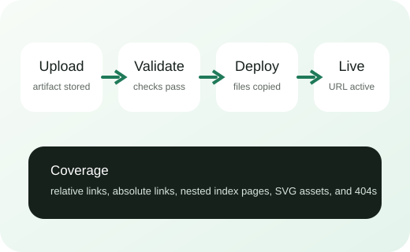

Directory index redirect
Open guides without the trailing slash.
Multi-page demo
This sample exercises shared assets, nested indexes, relative and absolute links, and custom 404 handling.

Open guides without the trailing slash.
Visit a deeper HTML file with parent-relative asset references.
Open pricing from the project root.